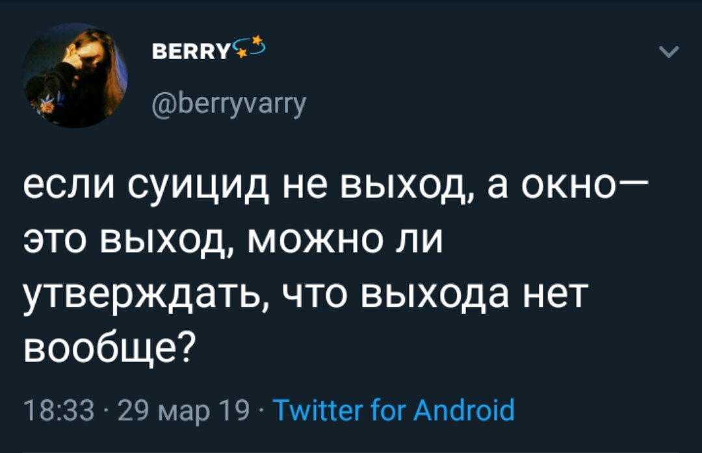
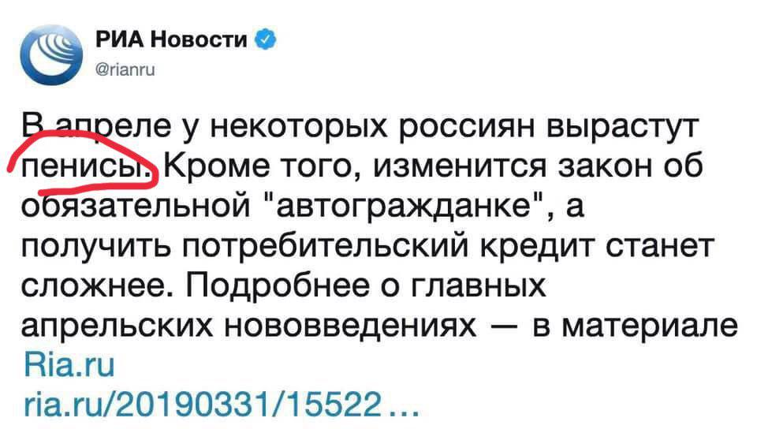
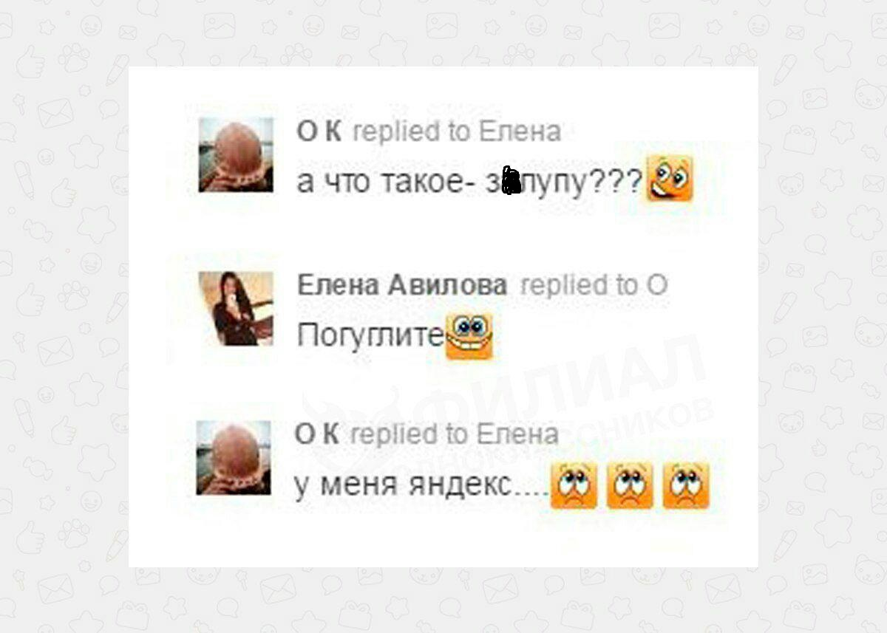
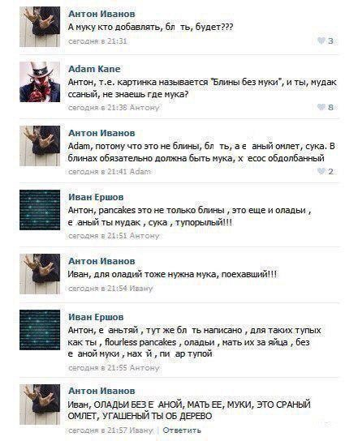
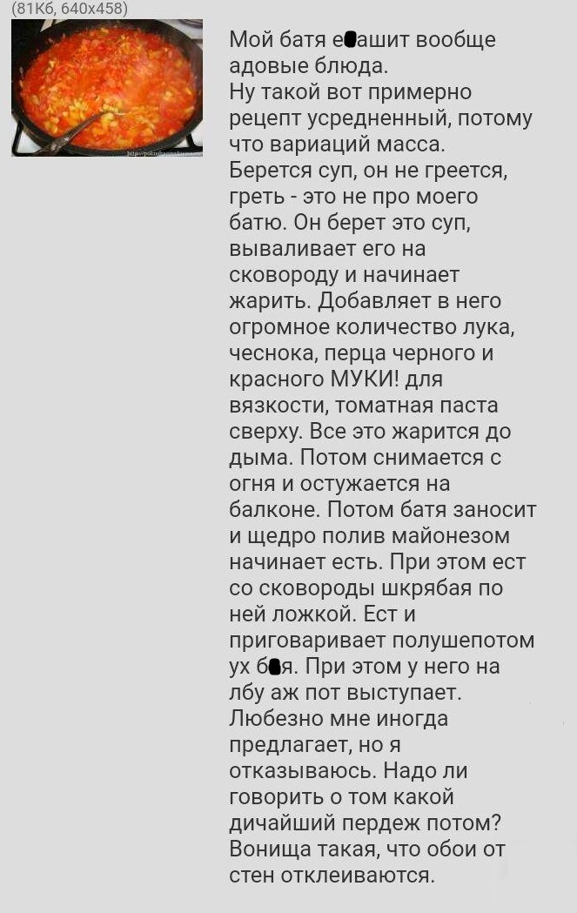

Скрины
Скрины - важная часть интернет-культуры, поскольку представляет собой аналог фотографии, но в условиях интернета.Твиттер
 Ну серьёзно, разве это смешно, суицидники мамкины?  Часто представляет собой глупую репризу, поданную под соусом иронии и высокомерия. Обычно весьма плачевное зрелище, но иногда попадаются и очень неплохие экземпляры. Ещё под видом этого мема время от времени проходит какой-нибудь интересный фейл (очепятка) большого брата. Пример - картинка выше.Скрины комментариев
 И немного классики:  Скринят всё, что только можно. Смешное, несмешное, кислое, сладкое, солёное и кисло-сладкое, а иногда, даже, ванильное. Само по себе направление мемотворчества весьма обширное, потому что, по сути, это - народный юмор из первых рук, без обработки и обёртки. Как правило, жертвами становятся пользователи Дноклассников, Втентакле, Тытрубы и прочих раковых соцсеточек.Двач и другие имиджборды
 Настоящая классика.Направление собирает в себе, в основном, длинные смешные истории, иногда просто забавные ситуации, происходящие в условиях биосферы двачей и форчей.